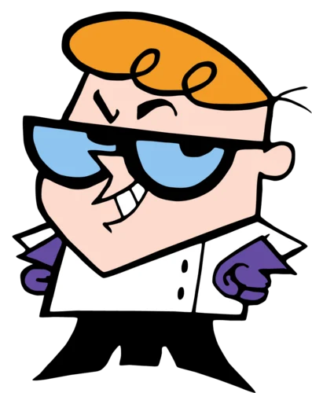

 |
Guilherme Cardoso dos Santos |
|---|
| Olá, este é um currículo fictício com alguma verdade feito como uma atividade do curso de DS noturno. Estou solteirão com meus míseros dezesseis anos (16).
Email: guilherme.santos@aluno.gmail.com.br Contato: (11)99971-2598 Endereço: Av. Paz e Alegria, 3733, Vila Formosa, São Paulo-SP. Brasil |
| Tenho como objetivo neste novo empreendimento atuar numa área de Programação, IOT dentro desta empresa |
| FORMAÇÃO |
|---|
| Técnico em Desenvolvimento de Sistemas(2026) Economia (2024) Pós-Graduação em Ciência da Computação (2020) |
| CURSOS COMPLEMENTARES |
| Língua estrangeira: Inglês |
| EXPERIÊNCIA |
| Formatador de slides apresentativos (2022-2024) Orador de turma (2025) Representante de Classe Média (2026) |